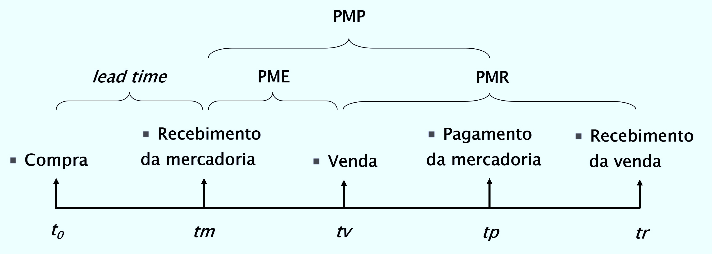

Administração de Estoque
Gestão Financeira
Roteiro da Aula
- Fundamentos da Gestão Financeira de Estoques
- Curva ABC
- Decisões de Compra
- Lote Econômico de Compra
Introdução
Desafios dos Estoques
- Níveis baixos podem interromper a produção
- Falta de matérias-primas compromete o atendimento
- Excesso de estoques reduz o giro dos ativos
- Impacto direto na rentabilidade empresarial
Gestão Estratégica
- Políticas de compras bem definidas
- Critérios rigorosos de controle
- Análise como decisão de investimento
- Equilíbrio entre custo e benefício
Classificação dos Estoques
Categorias Principais
- Mercadorias e produtos acabados
- Produtos em processo de elaboração
- Matérias-primas e materiais de embalagem
- Materiais de consumo e suprimentos
Fatores Determinantes
- Volume e padrão da atividade empresarial
- Nível de investimentos necessários
- Características operacionais específicas
- Peculiaridades do setor de atuação
Fatores Influenciadores dos Investimentos
Diferentes categorias de estoque são influenciadas por fatores específico
Materiais de Consumo: Pecularidades operacionais e administrativas
Matérias-primas: Problemas logísticos e de importação ; Economia de escala nas compras
Produtos em Elaboração: Duração do ciclo produtivo ; Nível tecnológico da produção
Produtos Acabados: Padrões de demanda do mercado ; Características físicas dos produtos
Estoques em Contexto Inflacionário
Estratégias de Proteção
- Reduzir ativos monetários expostos
- Aumentar estoques como hedge
- Análise criteriosa dos riscos
- Estudo dos custos envolvidos
Riscos Associados
- Redução da liquidez empresarial
- Dificuldade de acesso ao crédito
- Custo de oportunidade elevado
- Possível perda real de valor
Controle de Estoques: Análise ABC
A análise ABC categoriza itens de estoque conforme sua importância econômica, baseada no princípio de Pareto (80/20).
Objetivos:
- Priorizar atenção gerencial
- Otimizar recursos de controle
- Melhorar eficiência do sistema
- Reduzir custos administrativos
Construção da Curva ABC
Passos para Implementação:
- Calcular investimentos por item
- Quantidade média × Preço unitário
- Considerar todos os custos relevantes
- Ordenar do maior para o menor
- Classificar por importância
- Categoria A: Maior investimento (≈80% do valor)
- Categoria B: Importância intermediária
- Categoria C: Baixa representatividade (≈20% do valor)
- Definir políticas diferenciadas
- Controle rigoroso para itens A
- Controle moderado para itens B
- Controle simplificado para itens C
Representação Gráfica ABC
Interpretação: - 15% dos itens concentram 80% dos recursos - 50% dos itens representam 97% do investimento - Gestão diferenciada por categoria
Limitações da Análise ABC
Cuidados Necessários:
- Demanda esporádica: Produtos importantes podem não aparecer em períodos curtos
- Volume versus valor: Itens de baixo custo podem ter alto volume de vendas
- Criticidade operacional: Produtos essenciais podem ter baixo valor (ex: peças importadas com restrições)
- Sazonalidade: Considerar variações temporais na demanda
A análise deve considerar múltiplos critérios além do valor financeiro
Ferramenta Interativa: Curva ABC
Estoques e Economia de Escala
Benefícios do Aumento de Produção:
- Redução de custos fixos por unidade
- Maior eficiência operacional
- Aproveitamento da capacidade instalada
- Melhor negociação com fornecedores
Análise de Viabilidade:
- Custo do investimento marginal
- Economia esperada nos custos
- Taxa de retorno do investimento
- Comparação com custo do capital
Decisões de Compras
Fatores Críticos a Considerar:
- Prazo de permanência em estoque
- Tempo de recebimento das vendas
- Prazo de pagamento aos fornecedores
- Custo de captação de recursos
- Análise custo-benefício da antecipação
A decisão deve incluir o cálculo do custo de financiamento aos clientes quando as vendas forem a prazo
Cenário 1: Compra à Vista e Venda à Vista
Características:
- Prazo de estocagem positivo gera custo financeiro
- Empresa financia estoques até a realização
- Fluxo de caixa mais previsível
- Menor complexidade de gestão

Cenário 2: Compra à Vista e Venda a Prazo
Implicações Financeiras:
- Custo de estocagem se mantém
- Adiciona-se o custo de financiar clientes
- Necessidade de capital de giro aumenta
- Maior exposição ao risco de inadimplência
Cenário 3.1: Compra a Prazo e Venda à Vista
Estocagem Durante o Prazo de Pagamento
- Custo de estocagem é reduzido pela economia obtida com pagamento a prazo
Cenário 3.2: Compra a Prazo e Venda à Vista
Recebimento Antes do Pagamento
- Receita da venda pode ser aplicada até o vencimento da compra, gerando ganho financeiro
Cenário 4: Compra a Prazo e Venda a Prazo
Gestão Complexa:
- Necessidade de financiamento entre pagamento e recebimento
- Análise cuidadosa dos prazos envolvidos
- Maior necessidade de capital de giro
- Planejamento de fluxo de caixa essencial

Ferramenta Interativa: Decisões de Compra
Modelos de Controle de Estoques
Objetivos dos Modelos:
- Identificar custos relevantes
- Determinar níveis ótimos de estoque
- Minimizar custos totais
- Otimizar decisões de compra
Tipos de Custos: - Custos efetivos dos bens - Custos relevantes para decisão
Custos Efetivos dos Bens
Características:
- Baseados em registros contábeis
- Preços de compra das matérias-primas
- Custos totais de produção
- Valores históricos de aquisição
Limitações:
- Não identificam custos evitáveis
- Inadequados para análise decisorial
- Não consideram custos de oportunidade
- Foco em custos incorridos (sunk costs)
Custos Relevantes para Gestão
Definição: Custos evitáveis que variam com as decisões de compra
Categorias Principais:
- Custos de Compra (ou Pedido)
- Gastos de emissão de pedidos
- Custos de preparação
- Comportamento decrescente
- Custos de Manutenção
- Gastos de armazenamento
- Seguros e deterioração
- Comportamento crescente
Custos de Compra Detalhados
Componentes:
- Processamento de pedidos
- Inspeção e recebimento
- Custos de preparação da produção
- Gastos administrativos do processo
Comportamento:
- Fixos por pedido
- Decrescentes por unidade (diluição)
- Independem da quantidade comprada
- Incluem custos de setup
Custos de Manutenção Detalhados
Componentes:
- Armazenagem e manuseio
- Seguros e deterioração
- Obsolescência e perdas
- Custo de oportunidade do capital
Comportamento:
- Variáveis com o nível de estoque
- Constantes por unidade estocada
- Proporcionais ao tempo de permanência
- Incluem custo do capital investido
Modelo do Lote Econômico
Objetivo: Minimizar o custo total controlável do estoque
Equilíbrio: Entre custos de manutenção e custos de pedido
Comportamento do Estoque: - Declínio a taxa constante - Reposição instantânea - Consumo uniforme ao longo do tempo
Premissas do Lote Econômico
Hipóteses Básicas:
- Volume não influencia o custo unitário
- Demanda uniforme ao longo do tempo
- Condições de certeza (sem variabilidade)
- Reposição instantânea (lead time zero)
- Sem restrições financeiras
Note
Na prática, essas premissas raramente são atendidas completamente
Estoque de Segurança
Realidade Operacional:
- Demanda não é uniforme
- Existe variabilidade no fornecimento
- Lead times podem variar
- Necessidade de proteção contra rupturas
Fatores Determinantes:
- Nível de incerteza da demanda
- Custos de falta de estoque
- Custos de manutenção
- Nível de serviço desejado
Representação Gráfica dos Custos
Ponto Ótimo: Interseção das curvas de custo de manutenção e compra
Interpretação do Lote Econômico
Características do Ponto Ótimo:
- Custo total mínimo
- Equilíbrio entre custos opostos
- Define quantidade ideal por pedido
- Estabelece frequência ótima de compras
Aplicações Práticas:
- Programação de compras
- Dimensionamento de estoques
- Otimização de custos logísticos
- Planejamento financeiro
Exemplo Prático de Cálculo
Dados do Problema: - Demanda anual: 10.000 unidades - Custo de pedido: $400 por pedido - Custo de manutenção: $50 por unidade/ano
Análise de Diferentes Quantidades:
| Qtd Pedido | Freq. Pedidos | Custo Pedido | Custo Manutenção | Custo Total |
|---|---|---|---|---|
| 100 | 100,0 | 40.000 | 2.500 | 42.500 |
| 200 | 50,0 | 20.000 | 5.000 | 25.000 |
| 400 | 25,0 | 10.000 | 10.000 | 20.000 |
Lote Econômico = 400 unidades (menor custo total)
Considerações Finais
Benefícios da Gestão Otimizada:
- Redução de custos operacionais
- Melhoria do fluxo de caixa
- Maior eficiência produtiva
- Melhor atendimento ao cliente
Desafios da Implementação:
- Necessidade de dados confiáveis
- Adaptação às variações da demanda
- Integração com outros sistemas
- Monitoramento contínuo dos resultados
Tip
A gestão de estoques eficaz requer equilíbrio entre modelos teóricos e realidade operacional
FCCP | Administração de Estoque